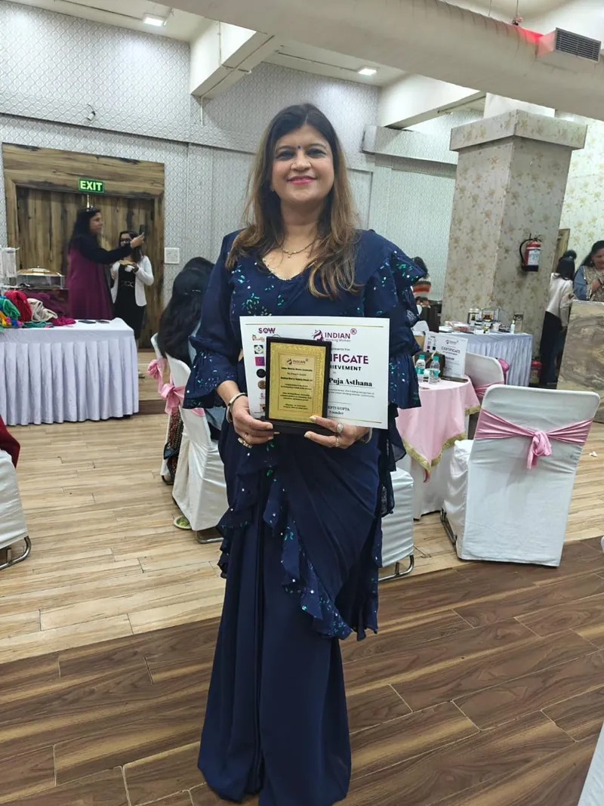

Vedic Astrology
Signs, houses, planets, yogas and the dasha system — the foundation of Jyotish, taught through real charts.
Learn from a practising Jyotish Acharya. Structured, practical training that takes you from fundamentals to reading real charts and real spaces.
Signs, houses, planets, yogas and the dasha system — the foundation of Jyotish, taught through real charts.
Krishnamurti Paddhati: star-lords, sub-lords and ruling planets for precise event timing.
Directions, the 16 zones, gridding and practical remedies for homes, offices and factories.
Consultations in South Delhi, site visits on request, and online sessions on Zoom for clients anywhere.

Spirit Stars conducts structured, practical training in Vedic astrology, KP astrology and Vastu Shastra, taught by Acharya Puja Asthana, a certified Jyotish Acharya from Bharatiya Vidya Bhavan. Message on WhatsApp for batch dates and format.
Ask about the current batch when you enquire — tell us your background and Acharya ji will suggest the right course.
Vedic astrology builds the foundation — signs, houses, planets and dashas. KP astrology adds the star-lord and sub-lord system for precise event timing. Many students learn Vedic first and then KP.
Yes. The Vastu course covers directions, zones, the gridding method and practical remedies for residential and commercial spaces.
Share a few details and Acharya Puja Asthana's team will reply on WhatsApp to fix a time — in person in South Delhi or online on Zoom, anywhere in India or abroad.